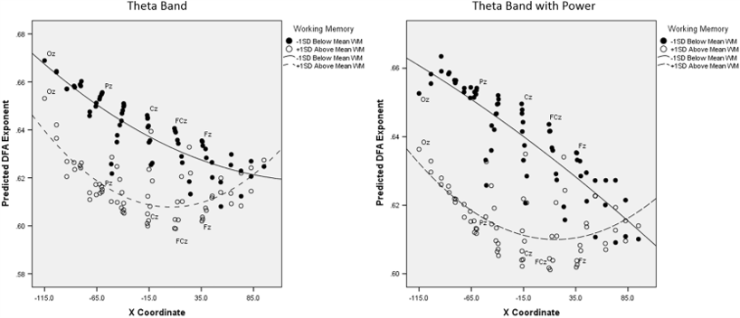
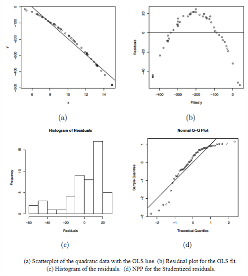
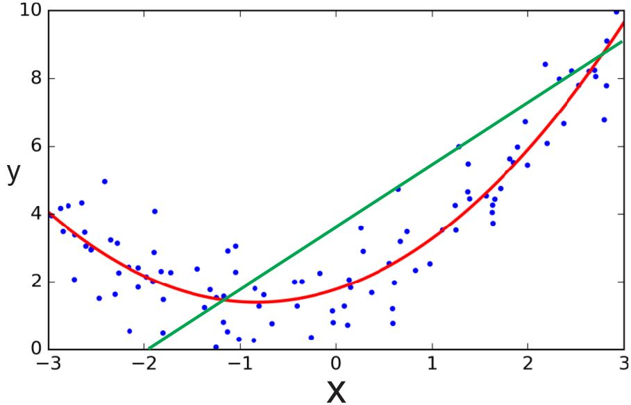
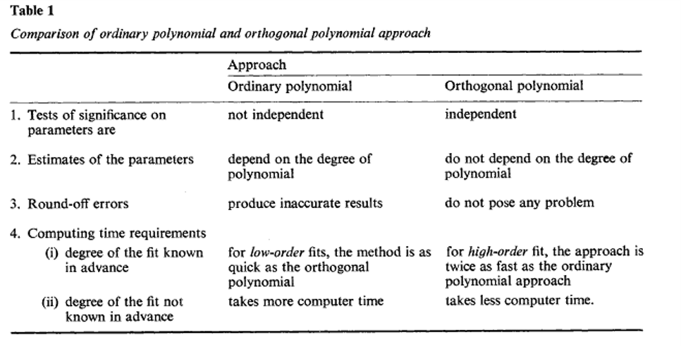
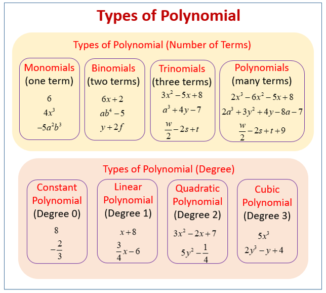

Introduction
Polynomial Regression
Statistics for CSAI II
Travis J. Wiltshire, Ph.D.
Outline
What we will cover today:
- Polynomial regression
- When to use it
- How to do it in R
- Orthogonal polynomials
Quiz
Question 1
Results
1. Which of the following would be a good coding system to use for categorical regression when you want to ensure your sample reflects the distribution of a group in the population?
Polynomial Regression
Polynomial Regression
Multiple
\[Y_i=b_0+b_1X_2+b_2X_2+ ...+b_nX_n+\epsilon_i\] - One dependent variable Y predicted from a set of independent variables (\(X_1, X_2, …X_k\)) - One regression coefficient for each independent variable - \(R^2:\) proportion of variation in dependent variable Y predictable by set of independent variables (X’s)
Polynomial:
\[Y_i=b_0+b_1X+b_2X^2+ ...+b_nX^n+\epsilon_i\]
- One dependent variable Y predicted from a set of independent variables (\(X_1, X_2, …X_k\))
- One regression coefficient for each independent variable
- Independent variables become variables raised to increasing degrees of the polynomial (the exponent they are raised to)
When to consider polynomial regression
- Theoretically: When you have theory or a reason to expect the relationship between your predictor and your outcome to be curvilinear

Butner et al., 2014

When to consider polynomial regression
- Theoretically: When you have theory or a reason to expect the relationship between your predictor and your outcome to be curvilinear
 Image from: Euler, M. J., Wiltshire, T. J., Niermeyer, M. A., & Butner, J. E. (2016). Working memory performance inversely predicts spontaneous delta and theta-band scaling relations. Brain research, 1637, 22-33.
When to consider polynomial regression
- Empirically: When you check out your scatterplots and other plots for checking the assumptions of your linear model
- Residuals vs fit
- Histogram of residuals
- QQ plot

Polynomial Regression
- The degree of the polynomial determines the number of points of inflection (-1)
- Must include all lower order terms
- Careful of over fit (generalizability of the model)
- Practical significance vs statistical significance
- Coefs tell us direction and strength/depth of curve(s)

Interpreting Polynomial Regression Results
- Plot them!
- Quadratic term
- Positive = curve opens upward (apex is lowest value)
- Negative = curve opens downward (apex is highest values)
- Focus is more on overall model comparisons and the shape of the trend vs interpretation of individual coefs

Running the model in R
- Manually create the polynomial terms
- E.g.,
arousal2<-arousal*arousal arousal3<-arousal*arousal*arousal
- E.g.,
- Add directly into
lm()formulaoutcome ~ pred + I(pred^2)

Exercise 1
Run multiple regression on the data
- Load the
yerkes.dodsdata (stored in a variable calledyerkes.dods) - Inspect the data and generate descriptives
- Run and save linear model with
perfas the outcome andarousas the predictor - Interpret the results
- Generate and inspect the following fitted vs residual plot, histogram of the residuals, and the qq plot
- Now run and save the model adding a quadratic term (you can decide which method you want to do to add this)
- Interpret the results
## The data is preloaded in a variable called yerkes.dods, when running this locally you will need to download the dataset from Canvas and load it
## Inspect the data and generate descriptives
## Run and save a linear model with perf as the outcome and arous as the predictor. Store the result in a variable called mod.lin
## Interpret the results
## Generate and inspect the following fitted vs residual plot, histogram of the residuals, and the qq plot
## Now run and save the model adding a quadratic term (you can decide which method you want to do to add this). Store the result in a variable called mod.quad
## Interpret the results# Inspect the data
psych::describe(yerkes.dods)
plot(yerkes.dods$arous,yerkes.dods$perf)
mod.lin<-lm(perf~arous,data=yerkes.dods)
summary(mod.lin)
#Check linearity and homscedasticity
plot(fitted(mod.lin),residuals(mod.lin), pch=20)
abline(a=0,b=0, lty=2)
#Check normality of residuals
hist(residuals(mod.lin))
qqnorm(residuals(mod.lin))
car::qqPlot(mod.lin)
##Visual Check
performance::check_model(mod.lin)
##Visual Check
performance::check_model(mod.lin)
#Quad. model
mod.quad<-lm(perf~arous+I(arous^2),data=yerkes.dods)
summary(mod.quad)Exercise 2
Compare your models
- Compare your models using
anova()and AIC - Which model fits better?
- What is the change in the \(R^2\)?
- Now check out if you have any problems with multicollinearity (you may need to manually create the quadratic variable)
## Compare your models stored in the variables mod.lin and mod.quad using `anova()` and AIC
## Which model fits better?
## What is the change in the $R^2$?
## Now check out if you have any problems with multicollinearity (you may need to manually create the quadratic variable)anova(mod.lin,mod.quad)
extractAIC(mod.lin)
extractAIC(mod.quad)
performance::compare_performance(mod.lin,mod.quad)
plot(performance::compare_performance(mod.lin,mod.quad))
performance::check_model(mod.quad)Orthogonal polynomials
Orthogonal polynomials
- Centering could work to reduce multicollinearity
- A transformation of the polynomial terms that reduces correlation
- But poses a challenge for interpretability because the b values are no longer in original metric
- Easy to do in R using
poly()function inlm()formula - See here for more but this is non-essential: Video or visualizations or Paper

Narula (1979)

Exercise 3
Run multiple regression on the data
- Load the
cub.csvdata file and call it ‘cub’ - Inspect the data and generate descriptives (this is simulated data)
- Make a scatterplot
## The data is preloaded in a variable called cub, when running this locally you will need to download the dataset from Canvas and load it
## Inspect the data and generate descriptives (this is simulated data)
## Make a scatterplot#
head(cub)
psych::describe(cub)
plot(cub$q,cub$noisy.y)Find the best fitting model
- Run and save 3 models (
noisy.yis outcome,qis predictor), interpret output along the way- Start with just a linear model
- Then add a quadratic term using the
poly()function in yourlm()formula - Then a cubic term using the
poly()function in yourlm()formula
- Compare the models to see which one fits best (you need to make 3 comparisons)
- Make a plot of the fitted values of the best fitting model with the observed data as well
- Check assumptions of the best fitting model
## The data is preloaded in a variable called cub, when running this locally you will need to download the dataset from Canvas and load it
## Run and save 3 models (`noisy.y` is outcome, `q` is predictor), interpret output along the way
## Start with just a linear model
## Then add a quadratic term using the `poly()` function in your `lm()` formula
## Then a cubic term using the `poly()` function in your `lm()` formula
## Compare the models to see which one fits best (you need to make 3 comparisons)
## Make a plot of the fitted values of the best fitting model with the observed data as well
## Check assumptions of the best fitting model#
mod2.lin<-lm(noisy.y~q)#Refer to dataset in these if you load it
summary(mod2.lin)
mod2.quad<-lm(noisy.y~poly(q,2))
summary(mod2.quad)
mod2.cub<-lm(noisy.y~poly(q,3))
summary(mod2.cub)
#Compare models
anova(mod2.lin,mod2.quad)
anova(mod2.lin,mod2.cub)
anova(mod2.quad,mod2.cub)
extractAIC(mod2.quad)
extractAIC(mod2.cub)
performance::compare_performance(mod2.lin,mod2.quad,mod2.cub)
plot(performance::compare_performance(mod2.lin,mod2.quad,mod2.cub))
# Make a plot of the fitted values and the observed data
plot(q,noisy.y,col='deepskyblue4',xlab='q',main='Observed data')
predicted.intervals <- predict(mod2.cub,data.frame(x=q),interval='confidence',level=0.99)
lines(q,predicted.intervals[,1],col='green',lwd=3)
lines(q,predicted.intervals[,2],col='black',lwd=1)
lines(q,predicted.intervals[,3],col='black',lwd=1)
# Check assumptions of model
performance::check_model(mod2.cub)
gvlma::gvlma(mod2.cub)Conclusion
Recap
- Polynomial regression is useful when:
- Predict the relationship between variables is curvilinear
- Checking assumptions and observe curve-like patterns
- Must iteratively add polynomial terms of increasing order and all lower order terms
- Compare model fit
- Sometimes polynomial terms can be too highly correlated with each other
- Create orthogonal polynomials
- In practice, patterns of results should be the same
- Next time:
- Mixed models
